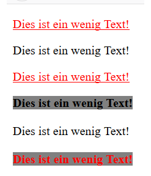
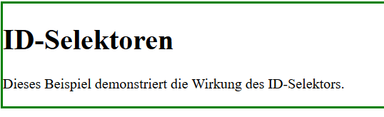
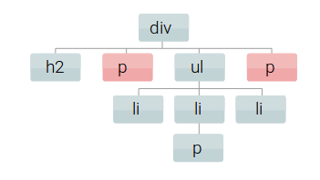
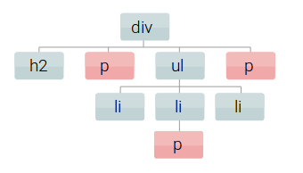
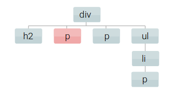

CSS und Selektoren¶
Damit Formateigenschaften auf ein Element angewendet werden können, muss definiert werden, welche Elemente angesprochen werden. Dies geschieht über Selektoren. Als Selektoren bezeichnet man die Teile einer CSS-Regel, die vor dem Abschnitt aus geschweiften Klammern stehen. Voneinander unabhängige Selektoren, denen dieselben Eigenschaften zugewiesen werden, können mit Kommata getrennt werden. Es gibt verschiedene Arten von Selektoren.
TypSelektoren¶
Der Element- bzw. Typselektor besteht aus dem Namen des Elements, das angesprochen werden soll. Mit diesem Selektor werden alle Elemente eines Typs angesprochen. Typselektoren geben manche Eigenschaften(z.B. Schriftgestaltung) an ihre Kinder weiter und manche nicht (z.B. background-color, border). Dies kann erwünscht bzw. unerwünscht sein. Man kann dies innerhalb von CSS durch den Attributwert inherit verändern.
Klassenselektor¶
spricht Elemente an, die einer bestimmten Klasse zugehörend sind
mehrere HTML-Elemente können die gleichen Klasse zugeordnet bekommen
Klassenselektoren können mit anderen Selektoren verbunden werden
Klassenselektor kann auch mit dem Typselektor verbunden sein
Ein Klassenselektor wird gebildet, wenn vor dem Klassennamen ein Punkt notiert wird
.wichtig {background-color: red}
Übung:¶
Erzeugen Sie aus dem folgenden HTML das nebenstehende Aussehen mit Hilfe von Klassenselektoren
{kind=link}
4. Using CSS and HTML Make a webpage that has two columns. Each column should use half of the width of the page. The left half should have a light gray background and the right half should have a light green background. The left half should have a list of the 5 best selling books in Amazon’s kindle store, and the right should have a list of your five favorite celebrities or athletes.
ID-Selektor¶
Spricht ein Element an, dem eine ID zugeordnet wurde
Gebildet durch Voranstellen des Gatterzeichens vor den ID-Namen
ID-Selektoren können mit anderen Selektoren verbunden werden
Mit Elementselektoren:
`elementname#id`Mit Klassenselektoren:
`.klassenname#id`bzw.`#id.klassenname`
Beispiel: Zeichnen Sie einen grünen Rahmen um das unten dargestellte p-Tag.
{kind=link}
Kontextselektor¶
Ein Nachfahren-Selektor oder Nachbar-Selektor wählt Elemente aus ihrer Position innerhalb von anderen Elementen aus – aus dem Kontext der HTML-Struktur. Sie sind also abhängig von der Struktur, in der sie auftreten: von ihren Nachbarn, Vorfahren und Nachfahren.
Ein Nachfahren-Selektor (Descendant Selector) filtert Elemente unterhalb bestimmter Elemente.
Ein Nachbar-Selektor (Adjacent Selector) filtert aufeinanderfolgende Elemente der gleichen Ebene,
Kindselektor¶
{kind=link}
“>” zwischen den beiden Selektoren
Trifft nur auf Elemente zu, die direkt innerhalb des div-Elementes liegen
`div > p { color: black; background-color: red; }`
Nachfahrenselektor¶
{kind=link}
Leerzeichen ” ” zwischen den Selektoren
Alle p-Elemente, die innerhalb von div-Elementen liegen, werden durch die Regel angesprochen
`div p { color: black; background-color: red; }`
Direkte Nachbar-Selektoren (Adjacent)¶
{kind=link}
Absteigender Selektor, angewendet auf ein p-Element, das dem h2-Element direkt folgt.
h2 und p haben dabei immer dieselben Eltern
`h2 + p { color: black; background-color: red; }`
Indirekte Nachbar-Selektoren¶

Angewendet auf alle p-Elemente, die dem h2-Element folgen.
h2 und p haben dabei immer dieselben Eltern – liegen also in derselben Ebene.
`h2 ~ p { color: white; background-color: red; }`